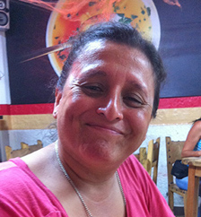

Viviana tiene más de diez años de experiencia profesional, en gestión de proyectos, desarrollo de negocios y gestión. Antes de fundar CadaVida, Viviana se desempeñó como directora general y cofundadora de Transfer CAP, un boutique en Beijing que se enfoca en la inversión y consultoría, firma que ella cofundo junto con la industria de tecnologías limpias de China. Viviana también ocupó varios puestos en Schneider Electric SA, incluyendo planificadora de proyectos y coordinadora técnica, donde desempeñó un papel clave en la gestión de las actividades de equipos multi-funcionales basados en Europa, EE.UU., Asia y América del Sur para desarrollar a gran escala, sistemas de solución de energías renovables industriales.